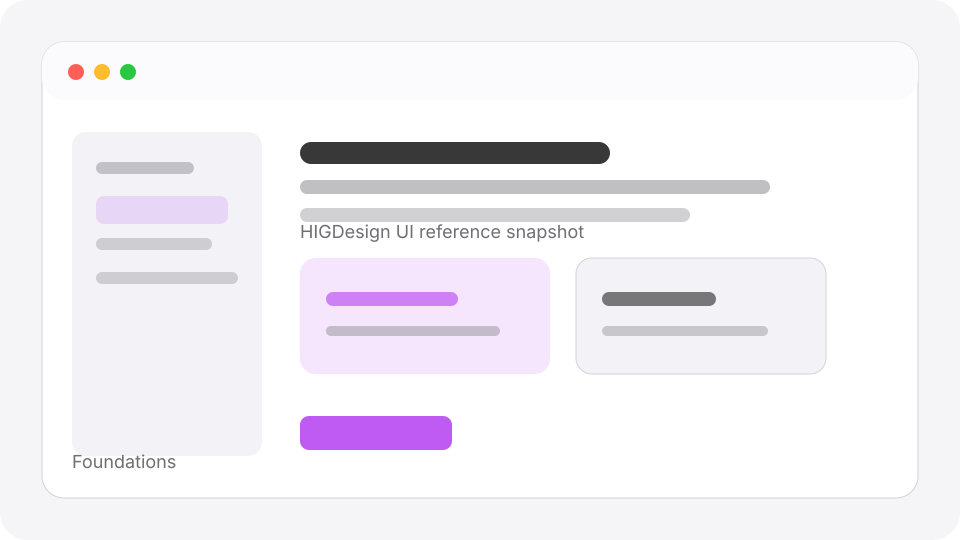

Must do
- Use system-adaptive behavior for appearance, type, motion, and accessibility.
- Document privacy and logging implications for UI that handles user text.
- Do not create visual styling that fights platform defaults.
Foundations
Ask only for necessary access and explain user value in user-facing language.

Never log private prompt text, reports, raw records, or secrets.
Use this local page as HIGDesign guidance, then check the official Apple source when finalizing UI details: Apple Human Interface Guidelines - Privacy.